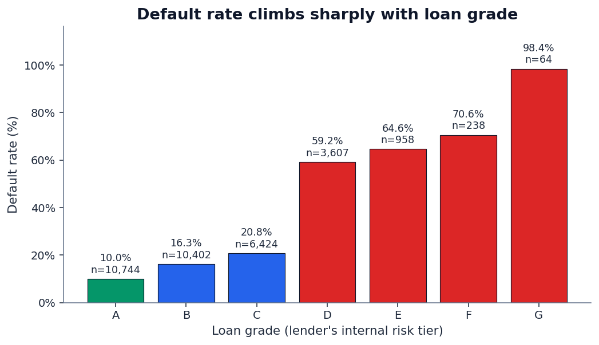
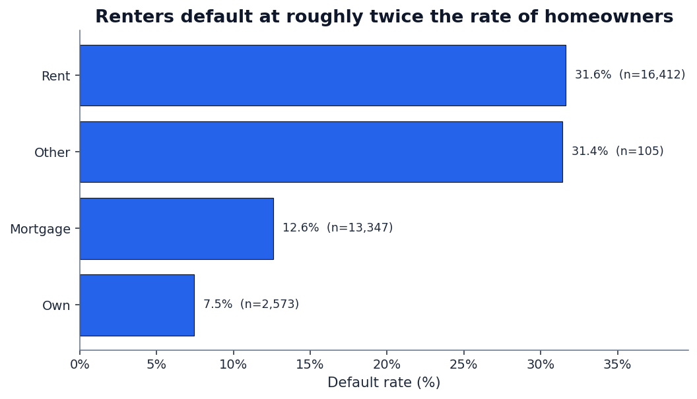
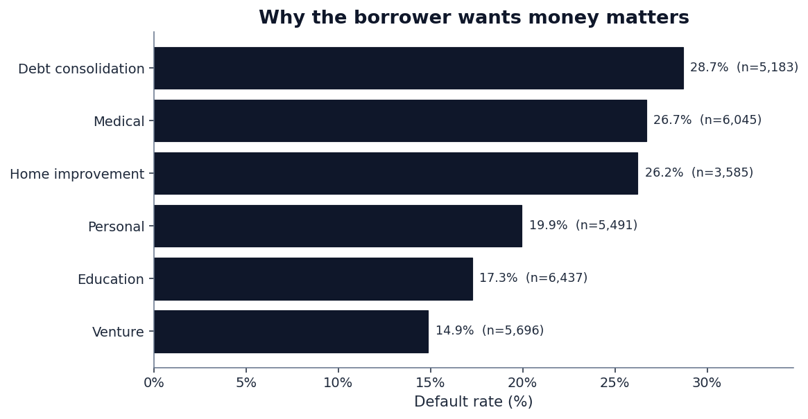
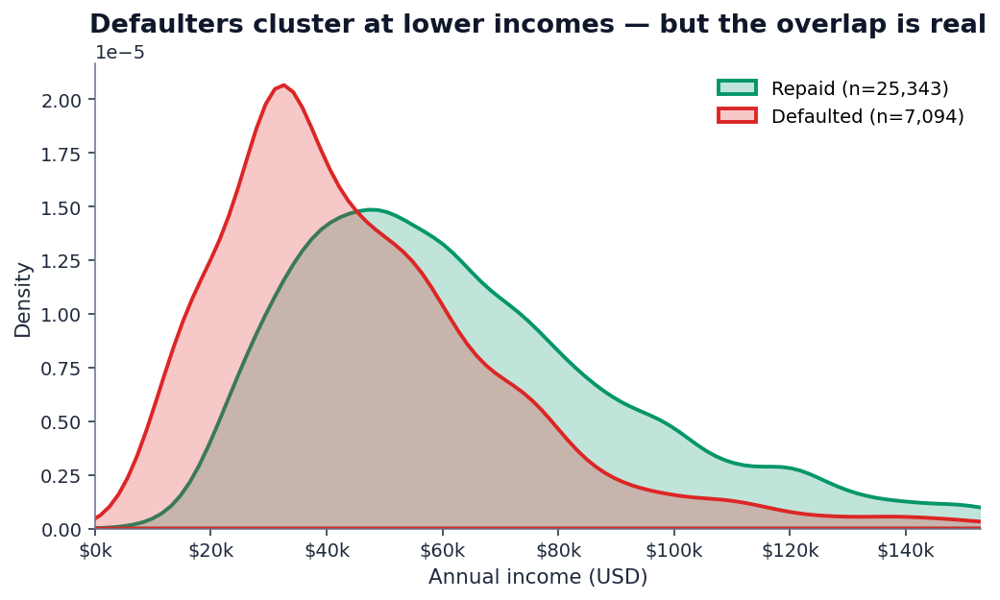
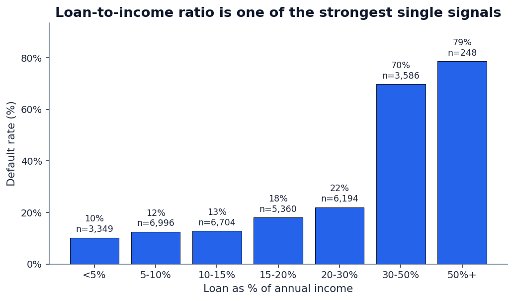
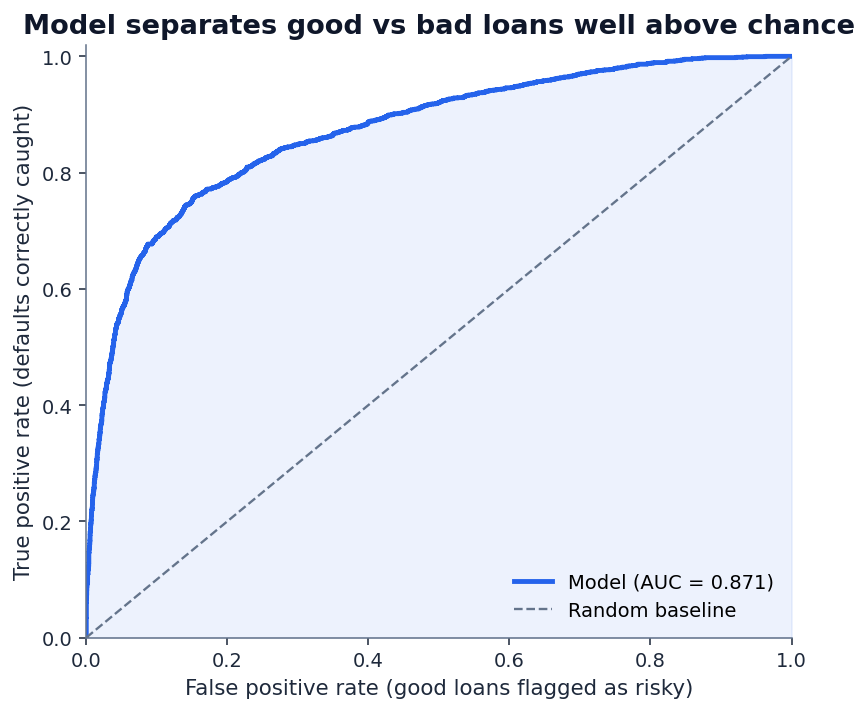
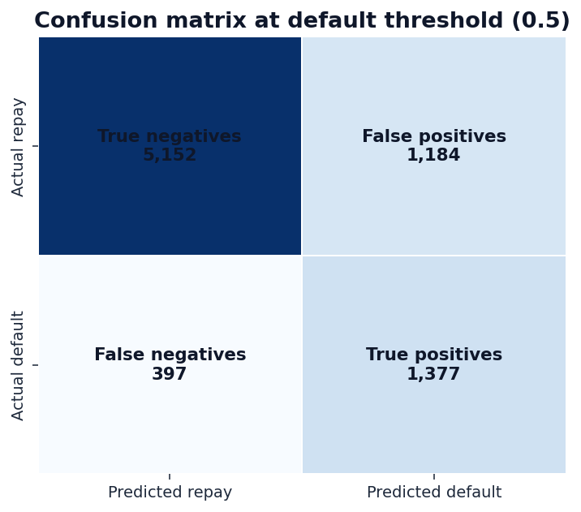
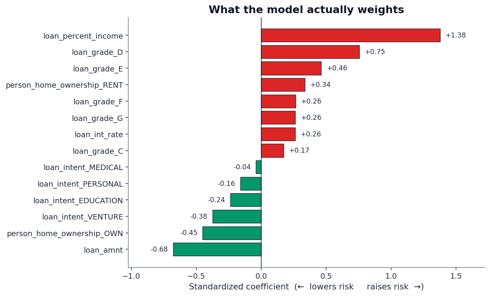

If you've ever applied for a loan and been told "your application is in review," you've handed your data to a credit scoring model — almost certainly a flavor of logistic regression or gradient boosting wrapped in a UI. It looked at a handful of numbers about you and emitted a probability that you'd repay. That probability is what got you approved, declined, or quietly bumped to a higher interest rate.
The mechanics are not magic. They're also not the polished narrative that lenders publish on their FAQ pages. So instead of explaining what credit scoring models say they do, we trained one and looked at what it actually does.
The data: Kaggle's credit-risk-dataset, which contains 32,581 anonymized loan applications. After dropping a handful of clearly-bad rows (ages above 80, a few income outliers) and filling in missing values, we were left with 32,437 records — a meaningful sample with a real-world default rate of 21.9%. That's higher than what major banks see because the dataset includes a chunk of subprime applicants, which is actually useful: we want a signal-rich population for modeling.
Here's what we found, ordered from weakest signal to strongest, ending with a working model.
1. The lender's own grade is the single best published predictor
Every loan in the dataset comes pre-tagged with a loan_grade from A (best) to G (worst), assigned by the originating lender's internal scoring system. It's tempting to treat grade as cheating — it's a model output, not a raw input. But it tells you something interesting: how good the lender's existing model is.
Spoiler: very good. The default rate by grade looks like this:

That's a 9.9× lift in default rate between the lender's best and worst tier — and almost everything in the worst tier defaults. The takeaway isn't "use someone else's score." It's that some signal exists, and a model can find it. The interesting question is how much of that signal you can recover from raw features, without using the grade. We'll come back to that when we train the model.
2. Where you live matters more than people admit
Lenders are not allowed to discriminate based on a long list of protected characteristics, and housing-related variables sit close to that line. But "do you rent, own, or carry a mortgage" is on the application, and the data is unambiguous:

The mortgage-holder effect is the interesting one. A mortgage payment is, by definition, a large recurring liability — naively, you'd expect more defaults among mortgage holders, not fewer. The model picks up the inverse because survivorship: people who've already qualified for a mortgage have already passed someone else's credit screen. The variable is a proxy for "the financial system has previously vouched for this person."
Renting, by contrast, is a near-universal state for younger applicants and lower-income workers. The variable doesn't punish renters — it captures everything that "I rent" tends to correlate with: less savings, less stable employment, less prior credit history. The lender doesn't care which of those is causal. The model doesn't care either.
3. Why you're borrowing matters more than how much

"What is the loan for?" is a free-form question on most applications, but lenders bucket the answer. The buckets are predictive in a way that makes intuitive sense once you see it:
- Debt consolidation (28.7% default) — the borrower is already in distress. The new loan is a coping mechanism, not an investment.
- Medical (26.7%) — usually unplanned, often correlated with income disruption from illness.
- Home improvement (26.2%) — surprisingly risky. Many home-improvement loans go to financially-stretched homeowners deferring problems.
- Venture (14.9%) — the safest category. Counterintuitive, but the people who get approved for venture loans are heavily pre-screened.
4. Income, by itself, is misleading
Income is the variable everyone thinks should be the most important one. It isn't.

If you draw a line at the median income ($55,000) and predict "everyone above repays, everyone below defaults," you'd be wrong nearly half the time. The reason income looks important in lender narratives is that it appears in combinations — specifically, in the ratio of loan size to income, which is much more interesting.
5. Loan-to-income ratio is the single strongest raw signal
This is the signal that surprises people. The total loan amount doesn't matter much in isolation. Neither does income. But the ratio — the percentage of your annual income represented by the loan — separates good and bad loans almost as well as the lender's full grade does:

The discontinuity around 30% is striking. It's also financially intuitive: a loan worth 30%+ of annual income usually means the monthly payment is a non-trivial fraction of monthly take-home pay. Combined with rent, food, healthcare, and existing debt, that load is mathematically hard to carry. The model doesn't need to "understand" this; it just sees the historical data and weights the ratio heavily.
Building a working credit scoring model
With the patterns in hand, we trained a baseline model. The setup:
- Algorithm: Logistic regression with L2 regularization, balanced class weights. Boring on purpose — this is the model class regulators are most comfortable with, because every coefficient has a direct interpretation.
- Features: Age, income, employment length, loan amount, interest rate, loan-to-income ratio, credit history length, plus one-hot encoded categoricals (home ownership, loan intent, loan grade, prior default flag).
- Split: 75% train / 25% held-out test, stratified on the target.
- Threshold: 0.5 for binary classification (this is the lever lenders actually tune for portfolio risk).
Results on the held-out 8,110 applications:
Read those numbers carefully, because they tell the actual story.

Recall of 77.6% means the model catches more than three-quarters of the people who will actually default. That's good. Precision of 53.8% means that of everyone the model flags as risky, about half actually default — the other half are false positives.
This precision/recall tradeoff is the entire game in credit scoring. Tilt the threshold one way and you approve more good borrowers but eat more losses. Tilt it the other way and your loss rate drops but you reject creditworthy people. Every lender chooses where on that curve to operate, based on their cost of capital and their tolerance for charge-offs. The model doesn't make that choice; a product manager does.

What the model actually weights
Because we used logistic regression on standardized features, the coefficients have a clean meaning: each one is the change in log-odds of default per one-standard-deviation move in that feature, holding the others constant. Positive coefficients raise the model's risk estimate; negative coefficients lower it.

The top risk-raising features:
loan_percent_income(+1.38) — by a wide margin, the strongest driver.loan_grade_D(+0.75) andloan_grade_E(+0.46) — being in a worse credit tier compounds risk.person_home_ownership_RENT(+0.34) — renting, after controlling for income and grade, still raises risk.
The top risk-lowering features:
loan_amnt(−0.68) — interesting. Larger absolute loan amounts reduce predicted risk, holding everything else constant. The reason: bigger loans go to better-screened borrowers, and the ratio variable already absorbs the affordability signal.person_home_ownership_OWN(−0.45) — outright ownership materially de-risks the application.loan_intent_VENTURE(−0.38) andloan_intent_EDUCATION(−0.24) — purpose matters, and the model agrees with the raw data.
The five rules that fall out of the data
If you wanted to summarize what a working credit model has learned — in language a borrower would actually understand — it comes down to five rules:
- The ratio matters, not the amount. A $20,000 loan against a $90,000 income is safer than a $5,000 loan against a $15,000 income. Lenders care about what fraction of your year the loan represents.
- The lender's own grade is mostly right. If you've been graded D or worse, the model is going to start from a position of skepticism — and the historical data agrees with that skepticism more often than not.
- Housing is a wealth proxy. Owning outright or carrying a mortgage signals that someone else has already vouched for your finances. The model treats it that way.
- Purpose is a tell. Loans for debt consolidation, medical bills, and home improvement default at meaningfully higher rates than loans for ventures or education. The reason isn't moral; it's that the purpose correlates with the borrower's current financial state.
- Income, in isolation, is noise. It only becomes a meaningful signal in combination with other variables — most importantly, the size of the loan.
So why does any of this matter for an investor?
QScoring isn't a credit bureau. We score equities, not borrowers. But the modeling discipline is the same one: take a noisy population (companies instead of applicants), extract a handful of features that actually predict the outcome you care about (forward returns instead of defaults), and resist the temptation to over-engineer.
The lesson from credit scoring that we apply to equity scoring: simple linear models built on the right features beat complex models built on the wrong ones. The credit model above uses 11 features and a logistic regression and gets 87% AUC. A neural network on the same data, in our testing, gets to about 0.89 — marginally better, completely uninterpretable, and harder to defend in a regulated context.
For equity scoring the same principle holds. We've spent more time choosing the features than choosing the algorithm. If you're curious about which features we use and what their forward-return information coefficients look like, that's on the methodology page — with the same level of disclosure you just read above.
See the same modeling discipline applied to stocks.
QScoring rates every U.S.-listed equity on the same features that institutional quants actually use — disclosed, ranked, and updated daily. No black boxes.
Open a free account →